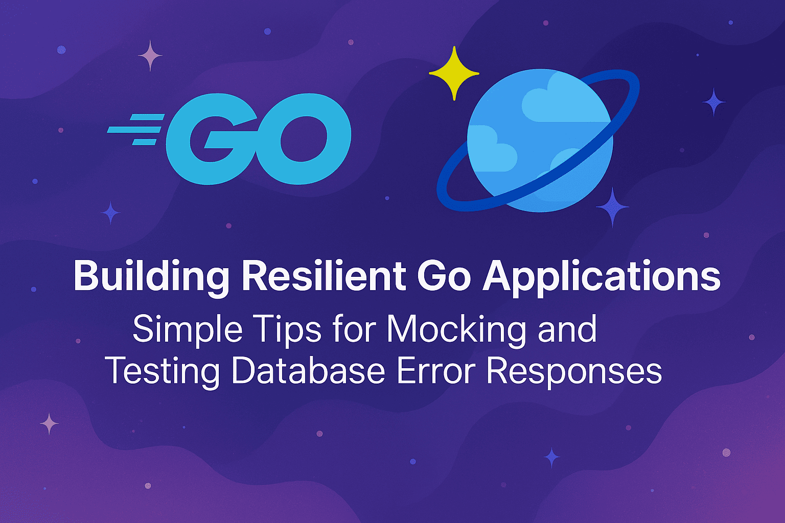

Building resilient Go applications: Simple tip for mocking and testing database error responses

When building applications that rely on databases (which is almost every application, right?), one of the biggest challenges developers face is testing how their code handles various error scenarios. What happens when the database returns a HTTP 400 error? How does your application respond to throttling? Will your retry logic work as expected?
These questions are crucial because in production, errors are inevitable. This holds true for Azure Cosmos DB as well. The database’s distributed nature means that errors can arise from various sources, including network issues (503 Service Unavailable), request timeouts (408 Request timeout), rate limits (429 Too many requests), and more. Therefore, robust error handling and testing are essential to maintain a reliable application that handles these gracefully rather than crashing or losing data.
Testing edge cases and different permutations of error scenarios traditionally requires a lot of effort and can be quite complex. Common approaches include:
- Triggering real errors in your development environment (unreliable and hard to reproduce)
- Mocking entire SDK responses (complex and may not reflect real behavior)
- Waiting for errors to happen in production (definitely not ideal!)
This is where error simulation can come in handy. By intercepting HTTP requests and selectively returning error responses, we can test specific scenarios in a controlled, repeatable manner.
Simulating errors using pluggable mechanisms
There are multiple ways to test error scenarios – from integration testing with real services to comprehensive mocking frameworks. This particular example uses the Go SDK for Azure Cosmos DB to illustrate how to simulate HTTP error conditions (403 Forbidden) for a specific operation (such as ReadItem). Note that this is just one technique in a broader toolkit of testing strategies.
Follow the next steps if you want to run this as a standalone Go application and see how it works in practice. Or, feel free to skip to the next section for a walkthrough.
Step 1: Copy the code below into a file named main.go:
package main
import (
"context"
"errors"
"fmt"
"io"
"net/http"
"strings"
"github.com/Azure/azure-sdk-for-go/sdk/azcore"
azlog "github.com/Azure/azure-sdk-for-go/sdk/azcore/log"
"github.com/Azure/azure-sdk-for-go/sdk/azcore/policy"
azruntime "github.com/Azure/azure-sdk-for-go/sdk/azcore/runtime"
"github.com/Azure/azure-sdk-for-go/sdk/azidentity"
"github.com/Azure/azure-sdk-for-go/sdk/data/azcosmos"
)
func init() {
azlog.SetListener(func(cls azlog.Event, msg string) {
// Log retry-related events
switch cls {
case azlog.EventRetryPolicy:
fmt.Printf("Retry Policy Event: %s\n", msg)
}
})
// Set logging level to include retries
azlog.SetEvents(azlog.EventRetryPolicy)
}
// CustomTransport403Error implements policy.Transporter to simulate 403 errors only for ReadItem operations
type CustomTransport403Error struct{}
func (t *CustomTransport403Error) Do(req *http.Request) (*http.Response, error) {
// Check if this is a ReadItem operation (typically a GET request with an item id in the path)
// ReadItem URLs look like: /dbs/{db}/colls/{container}/docs/{id}
isReadItemOperation := req.Method == "GET" && strings.Contains(req.URL.Path, "/docs/")
if isReadItemOperation {
fmt.Printf("CustomTransport403Error: Simulating 403 error for ReadItem operation: %s\n", req.URL.String())
// Create a simulated 403 response with sub-status 3
header := make(http.Header)
header.Set("x-ms-substatus", "3")
header.Set("x-ms-activity-id", "readitem-test-activity-id")
header.Set("x-ms-request-id", "readitem-test-request-id")
header.Set("Content-Type", "application/json")
response := &http.Response{
StatusCode: 403,
Status: "403 Forbidden",
Header: header,
Body: io.NopCloser(strings.NewReader(`{"code": "Forbidden", "message": "Simulated 403 error for ReadItem with sub-status 3"}`)),
Request: req,
}
// Return both the response and the error so the SDK can handle it properly
responseErr := azruntime.NewResponseError(response)
return response, responseErr
}
// For all other operations (like account properties), use a fake successful response
fmt.Printf("CustomTransport403Error: Allowing operation: %s %s\n", req.Method, req.URL.String())
// Create a fake successful response for account properties and other operations
header := make(http.Header)
header.Set("Content-Type", "application/json")
header.Set("x-ms-activity-id", "success-activity-id")
header.Set("x-ms-request-id", "success-request-id")
response := &http.Response{
StatusCode: 200,
Status: "200 OK",
Header: header,
Body: io.NopCloser(strings.NewReader("")),
Request: req,
}
return response, nil
}
// RetryLoggingPolicy logs error details during retries
type RetryLoggingPolicy struct{}
func (p *RetryLoggingPolicy) Do(req *policy.Request) (*http.Response, error) {
// fmt.Println("RetryLoggingPolicy: Starting retry with request URL:", req.Raw().URL.String())
// Call the next policy in the chain
resp, err := req.Next()
// If there's an error, log the details
if err != nil {
var azErr *azcore.ResponseError
if errors.As(err, &azErr) {
subStatus := azErr.RawResponse.Header.Get("x-ms-substatus")
if subStatus == "" {
subStatus = "N/A"
}
fmt.Printf("RetryLoggingPolicy: ResponseError during retry - Status: %d, SubStatus: %s, URL: %s\n",
azErr.StatusCode, subStatus, req.Raw().URL.String())
} else {
fmt.Printf("RetryLoggingPolicy: Non-ResponseError during retry - %T: %v, URL: %s\n",
err, err, req.Raw().URL.String())
}
} else if resp != nil && resp.StatusCode >= 400 {
// Log HTTP error responses even if they don't result in Go errors
subStatus := resp.Header.Get("x-ms-substatus")
if subStatus == "" {
subStatus = "N/A"
}
fmt.Printf("RetryLoggingPolicy: HTTP error response - Status: %d, SubStatus: %s, URL: %s\n",
resp.StatusCode, subStatus, req.Raw().URL.String())
}
return resp, err
}
func main() {
opts := &azcosmos.ClientOptions{
ClientOptions: azcore.ClientOptions{
PerRetryPolicies: []policy.Policy{
&RetryLoggingPolicy{}, // This will log error details during retries
},
Transport: &CustomTransport403Error{}, // Use the selective transport to simulate 403 errors only for ReadItem
},
}
creds, _ := azidentity.NewDefaultAzureCredential(nil)
client, err := azcosmos.NewClient("https://i_dont_exist.documents.azure.com:443", creds, opts)
if err != nil {
fmt.Printf("NewClient Error occurred: %v\n", err)
return
}
// Test the ReadItem operation
container, err := client.NewContainer("dummy", "dummy")
if err != nil {
fmt.Printf("NewContainer Error occurred: %v\n", err)
return
}
partitionKey := azcosmos.NewPartitionKeyString("testpk")
_, err = container.ReadItem(context.Background(), partitionKey, "testid", nil)
handlerError(err)
}
func handlerError(err error) {
if err != nil {
fmt.Println("ReadItem Error occurred")
// Debug: Print the actual error type
fmt.Printf("Error type: %T\n", err)
// fmt.Printf("Error value: %v\n", err)
var azErr *azcore.ResponseError
if errors.As(err, &azErr) {
fmt.Println("Successfully unwrapped to azcore.ResponseError using errors.As")
fmt.Printf("error status code: %d\n", azErr.StatusCode)
subStatus := azErr.RawResponse.Header.Get("x-ms-substatus")
if subStatus == "" {
subStatus = "N/A"
}
fmt.Printf("error sub-status code: %s\n", subStatus)
}
}
}Step 2: Use the following commands to run the application:
go mod init demo
go mod tidy
go run main.goLets break this down and understand how it works.
1. Custom transport layer for injecting errors
CustomTransport403Error is a custom HTTP transport that intercepts requests before they reach Azure Cosmos DB. This transport examines each request and decides whether to simulate an error based on the operation type (e.g., ReadItem). If the request matches the criteria, it returns a simulated error response; otherwise, it allows the request to proceed normally.
It returns a 403 Forbidden HTTP response with a specific sub-status code (3 - WriteForbidden), and its wrapped in an azcore.ResponseError to closely mirror what Azure Cosmos DB would actually return. The x-ms-substatus header is particularly important for Cosmos DB applications, as it provides specific context about why an operation failed. It’s included to make sure that error handling code processes responses exactly as it would in production.
You can customize the error simulation logic as needed.
type CustomTransport403Error struct{}
func (t *CustomTransport403Error) Do(req *http.Request) (*http.Response, error) {
isReadItemOperation := req.Method == "GET" && strings.Contains(req.URL.Path, "/docs/")
if isReadItemOperation {
fmt.Printf("CustomTransport403Error: Simulating 403 error for ReadItem operation: %s\n", req.URL.String())
// Create a simulated 403 response with sub-status 3
header := make(http.Header)
header.Set("x-ms-substatus", "3")
header.Set("x-ms-activity-id", "readitem-test-activity-id")
header.Set("x-ms-request-id", "readitem-test-request-id")
header.Set("Content-Type", "application/json")
response := &http.Response{
StatusCode: 403,
Status: "403 Forbidden",
Header: header,
Body: io.NopCloser(strings.NewReader(`{"code": "Forbidden", "message": "Simulated 403 error for ReadItem with sub-status 3"}`)),
Request: req,
}
// Return both the response and the error so the SDK can handle it properly
responseErr := azruntime.NewResponseError(response)
return response, responseErr
}
// For all other operations, return a successful response
// ... (successful response creation code)
}The Go SDK for Azure Cosmos DB retries requests that return certain error codes, such as 403 (Forbidden), and others. This custom transport allows you to simulate these conditions without needing to actually hit the database.
2. Observing SDK retries using custom policies
I covered Retry Policies in a previous blog post – How to configure and customize the Go SDK for Azure Cosmos DB.
In this example, a custom policy is used to provide visibility into the retry behavior. It logs detailed information about each retry attempt:
type RetryLoggingPolicy struct{}
func (p *RetryLoggingPolicy) Do(req *policy.Request) (*http.Response, error) {
// Call the next policy in the chain
resp, err := req.Next()
// If there's an error, log the details
if err != nil {
var azErr *azcore.ResponseError
if errors.As(err, &azErr) {
subStatus := azErr.RawResponse.Header.Get("x-ms-substatus")
if subStatus == "" {
subStatus = "N/A"
}
fmt.Printf("RetryLoggingPolicy: ResponseError during retry - Status: %d, SubStatus: %s, URL: %s\n",
azErr.StatusCode, subStatus, req.Raw().URL.String())
}
}
return resp, err
}This is really useful for understanding how your application behaves under error conditions. When applications encounter errors, the SDK automatically retries those requests. They might ultimately succeed after a few attempts, but you may want to have visibility into this process.
You can plug in a custom RetryLoggingPolicy to intercept these retries and log relevant information, such as the status code, sub-status code, and the URL of the request. This helps you understand how your application behaves during error conditions.
3. Integration and error handling verification
The main function ties everything together. It sets up the Cosmos DB client with the custom transport and retry policy, then performs a ReadItem operation. If an error occurs, it uses the handlerError function to extract and log the status code and sub-status code from the error response.
The custom transport and retry policy are integrated into the application as part of ClientOptions.
- The custom transport is configured as the Transporter which represents an HTTP pipeline transport used to send HTTP requests and receive responses.
- The retry policy is added to the PerRetryPolicies list. Each policy is executed once per request, and for each retry of that request.
func main() {
opts := &azcosmos.ClientOptions{
ClientOptions: azcore.ClientOptions{
PerRetryPolicies: []policy.Policy{
&RetryLoggingPolicy{}, // This will log error details during retries
},
Transport: &CustomTransport403Error{}, // Use the custom transport
},
}
// ... client creation and ReadItem operation ...
_, err = container.ReadItem(context.Background(), partitionKey, "testid", nil)
handlerError(err)
}
func handlerError(err error) {
if err != nil {
var azErr *azcore.ResponseError
if errors.As(err, &azErr) {
fmt.Printf("error status code: %d\n", azErr.StatusCode)
subStatus := azErr.RawResponse.Header.Get("x-ms-substatus")
if subStatus == "" {
subStatus = "N/A"
}
fmt.Printf("error sub-status code: %s\n", subStatus)
}
}
}Conclusion
By making error scenarios easy to reproduce and test, you’re more likely to build applications that handle them gracefully. This pattern can be extended to test various scenarios such as different HTTP status codes (429 for throttling, for example), network timeouts, intermittent failures that succeed after retries, circuit breaker patterns, fallback mechanisms, and more.
To begin with, you can focus on combination specific operations (like read, or write) and error types that are most relevant to your application. You can gradually expand this to cover more complex scenarios, such as simulating throttling, server errors, or even network timeouts.